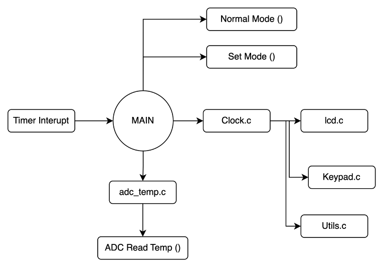
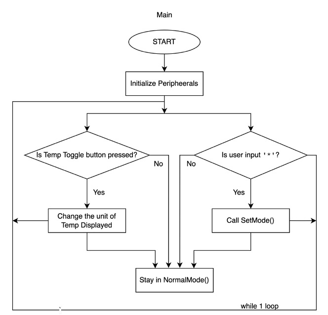
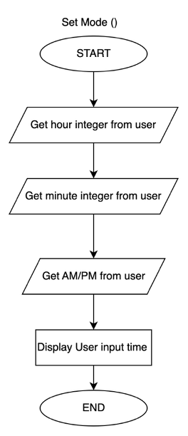
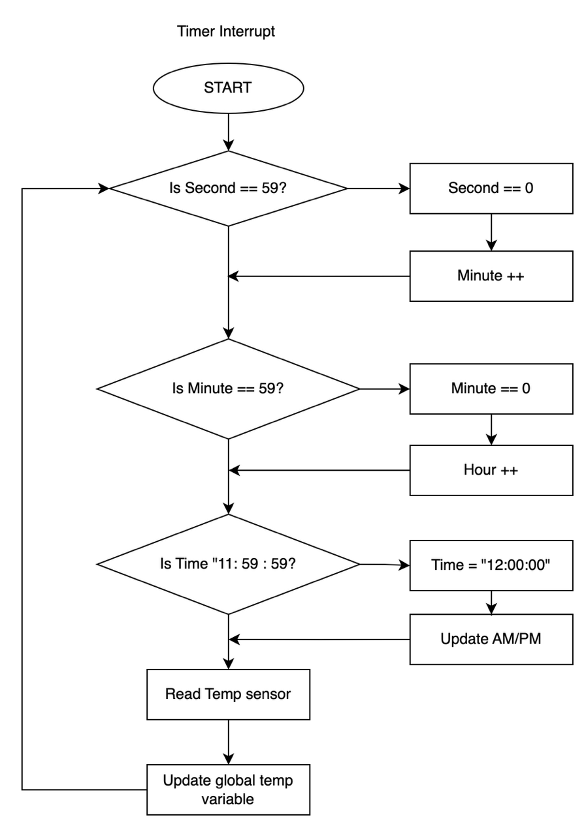
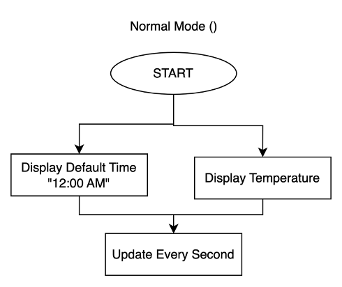

Introduction
The objective of this project is to design and implement a microcontroller-based system that displays the current time and temperature on a 16x2 character LCD using a 4-bit parallel interface. The system allows for real-time updates, user-defined time settings via keypad input, and toggling of temperature units between Celsius and Fahrenheit using a push button.
Apparatus List
• STM32F4 Nucleo Development Board
• LM35 Temperature Sensor
• 4x4 Keypad
• 16x2 HD44780-Compatible LCD
• Breadboard and jumper wires
• Potentiometer (for LCD contrast control)
• USB cable for programming and power
• STM32CubeIDE and C Libraries
Engineering Design
Modules & Flow
• Clock Module (clock.c): Handles timekeeping via TIM2 interrupt. Supports
12-hour format with AM/PM logic.
• Temperature Module (adc_temp.c): Reads analog voltage from LM35 using ADC1 and converts to Celsius.
Converts to Fahrenheit on toggle.
• Keypad Module (keypad.c): Implements polling-based 4x4 keypad interface.
• LCD Display (lcd.c): Custom 4-bit LCD driver for displaying text.
• Utilities (utils.c): Input validation, AM/PM parsing, and format helpers.
Call Graph
Flow Charts
   Photos and Videos
Codes
Main (C)
#include "main.h"
#include "lcd.h"
#include "keypad.h"
#include "adc_temp.h"
#include "clock.h"
#include "utils.h"
#include "stm32f4xx_hal.h"
#include
#include
volatile uint8_t toggleRequested = 0;
// FIXES ALL CONFLICTING TYPES:
void SystemClock_Config(void);
void MX_GPIO_Init(void);
void MX_ADC1_Init(void);
void MX_TIM2_Init(void);
char timeStr[12];
char tempStr[6];
bool isFahrenheit = true;
ADC_HandleTypeDef hadc1;
TIM_HandleTypeDef htim2;
int main(void)
{
HAL_Init();
SystemClock_Config();
MX_GPIO_Init();
MX_ADC1_Init();
MX_TIM2_Init();
HAL_TIM_Base_Start_IT(&htim2);
keypad_init();
lcd_init();
//lcd_clear();
lcd_print("Time & Temp");
HAL_Delay(500);
lcd_clear();
//static char lastTimeStr[16] = {0};
//static char lastTempStr[16] = {0};
while (1)
{
static char lastTimeStr[16] = {0};
static char lastTempStr[16] = {0};
char timeStr[16];
char tempStr[16];
char key = keypad_get_key();
if (key == '*') {
clock_enter_set_mode(); // triggers Set Mode
memset(lastTimeStr, 0, sizeof(lastTimeStr));
memset(lastTempStr, 0, sizeof(lastTempStr));
continue;
}
clock_get_time_string(timeStr);
int tempC = adc_read_temp_c();
int temp = isFahrenheit ? c_to_f(tempC) : tempC;
format_temp_str(tempStr, temp, isFahrenheit);
// Update time only if changed
if (strcmp(timeStr, lastTimeStr) != 0) {
lcd_set_cursor(0, 0);
lcd_print(timeStr);
strcpy(lastTimeStr, timeStr);
}
// Update temp only if changed
if (strcmp(tempStr, lastTempStr) != 0) {
lcd_set_cursor(1, 0);
lcd_print(tempStr);
strcpy(lastTempStr, tempStr);
}
HAL_Delay(200);
if (toggleRequested)
{
isFahrenheit = !isFahrenheit;
toggleRequested = 0;
}
}
}
void HAL_TIM_PeriodElapsedCallback(TIM_HandleTypeDef *htim)
{
if (htim->Instance == TIM2 && !in_set_mode) {
clock_tick();
}
}
void SystemClock_Config(void)
{
}
void MX_GPIO_Init(void)
{
GPIO_InitTypeDef GPIO_InitStruct = {0};
// Enable GPIO clocks
__HAL_RCC_GPIOA_CLK_ENABLE();
__HAL_RCC_GPIOB_CLK_ENABLE();
__HAL_RCC_GPIOC_CLK_ENABLE();
// LCD Pins (RS, EN, D4-D7)
GPIO_InitStruct.Mode = GPIO_MODE_OUTPUT_PP;
GPIO_InitStruct.Pull = GPIO_NOPULL;
GPIO_InitStruct.Speed = GPIO_SPEED_FREQ_LOW;
// RS - PA10
GPIO_InitStruct.Pin = GPIO_PIN_10;
HAL_GPIO_Init(GPIOA, &GPIO_InitStruct);
// EN - PB3
GPIO_InitStruct.Pin = GPIO_PIN_3;
HAL_GPIO_Init(GPIOB, &GPIO_InitStruct);
// D4-D6 = PB5, PB4, PB2
GPIO_InitStruct.Pin = GPIO_PIN_5 | GPIO_PIN_4 | GPIO_PIN_2;
HAL_GPIO_Init(GPIOB, &GPIO_InitStruct);
// D7 = PB1
GPIO_InitStruct.Pin = GPIO_PIN_1;
HAL_GPIO_Init(GPIOB, &GPIO_InitStruct);
// Button on PA9 (Input Pull-Up)
GPIO_InitStruct.Pin = GPIO_PIN_9;
GPIO_InitStruct.Mode = GPIO_MODE_INPUT;
GPIO_InitStruct.Pull = GPIO_PULLUP;
HAL_GPIO_Init(GPIOA, &GPIO_InitStruct);
// ===== Keypad ROWS (Inputs with Pull-Up) =====
GPIO_InitStruct.Mode = GPIO_MODE_INPUT;
GPIO_InitStruct.Pull = GPIO_PULLUP;
GPIO_InitStruct.Pin = GPIO_PIN_5 | GPIO_PIN_6 | GPIO_PIN_7; // PA5, PA6, PA7
HAL_GPIO_Init(GPIOA, &GPIO_InitStruct);
GPIO_InitStruct.Pin = GPIO_PIN_6; // PB6
HAL_GPIO_Init(GPIOB, &GPIO_InitStruct);
// ===== Keypad COLS (Outputs Push-Pull) =====
GPIO_InitStruct.Mode = GPIO_MODE_OUTPUT_PP;
GPIO_InitStruct.Pull = GPIO_NOPULL;
GPIO_InitStruct.Speed = GPIO_SPEED_FREQ_LOW;
GPIO_InitStruct.Pin = GPIO_PIN_9 | GPIO_PIN_8; // PA9, PA8
HAL_GPIO_Init(GPIOA, &GPIO_InitStruct);
GPIO_InitStruct.Pin = GPIO_PIN_10; // PB10
HAL_GPIO_Init(GPIOB, &GPIO_InitStruct);
GPIO_InitStruct.Pin = GPIO_PIN_7; // PC7
HAL_GPIO_Init(GPIOC, &GPIO_InitStruct);
// PC13 as input with interrupt (for User Button)
GPIO_InitStruct.Pin = GPIO_PIN_13;
GPIO_InitStruct.Mode = GPIO_MODE_IT_FALLING;
GPIO_InitStruct.Pull = GPIO_PULLUP;
HAL_GPIO_Init(GPIOC, &GPIO_InitStruct);
// NVIC for EXTI
HAL_NVIC_SetPriority(EXTI15_10_IRQn, 0, 0);
HAL_NVIC_EnableIRQ(EXTI15_10_IRQn);
}
void MX_ADC1_Init(void)
{
ADC_ChannelConfTypeDef sConfig = {0};
__HAL_RCC_ADC1_CLK_ENABLE();
hadc1.Instance = ADC1;
hadc1.Init.ClockPrescaler = ADC_CLOCK_SYNC_PCLK_DIV4;
hadc1.Init.Resolution = ADC_RESOLUTION_12B;
hadc1.Init.ScanConvMode = DISABLE;
hadc1.Init.ContinuousConvMode = DISABLE;
hadc1.Init.DiscontinuousConvMode = DISABLE;
hadc1.Init.ExternalTrigConvEdge = ADC_EXTERNALTRIGCONVEDGE_NONE;
hadc1.Init.ExternalTrigConv = ADC_SOFTWARE_START;
hadc1.Init.DataAlign = ADC_DATAALIGN_RIGHT;
hadc1.Init.NbrOfConversion = 1;
hadc1.Init.DMAContinuousRequests = DISABLE;
hadc1.Init.EOCSelection = ADC_EOC_SINGLE_CONV;
HAL_ADC_Init(&hadc1);
sConfig.Channel = ADC_CHANNEL_1; // PA1 for LM35
sConfig.Rank = 1;
sConfig.SamplingTime = ADC_SAMPLETIME_3CYCLES;
HAL_ADC_ConfigChannel(&hadc1, &sConfig);
}
void MX_TIM2_Init(void)
{
__HAL_RCC_TIM2_CLK_ENABLE();
htim2.Instance = TIM2;
htim2.Init.Prescaler = 15999;
htim2.Init.CounterMode = TIM_COUNTERMODE_UP;
htim2.Init.Period = 999;
htim2.Init.ClockDivision = TIM_CLOCKDIVISION_DIV1;
htim2.Init.AutoReloadPreload = TIM_AUTORELOAD_PRELOAD_DISABLE;
HAL_TIM_Base_Init(&htim2);
HAL_NVIC_SetPriority(TIM2_IRQn, 0, 0);
HAL_NVIC_EnableIRQ(TIM2_IRQn);
}
void HAL_GPIO_EXTI_Callback(uint16_t GPIO_Pin)
{
if (GPIO_Pin == GPIO_PIN_13)
{
toggleRequested = 1; // set a flag
}
}
ADC Temp code (C)
#include "adc_temp.h"
#include "main.h"
extern ADC_HandleTypeDef hadc1;
int adc_read_temp_c(void)
{
uint32_t sum = 0;
const int samples = 10;
const float vref = 3.3f; // STM32's ADC reference voltage is still 3.3V
for (int i = 0; i < samples; i++) {
HAL_ADC_Start(&hadc1);
HAL_ADC_PollForConversion(&hadc1, HAL_MAX_DELAY);
sum += HAL_ADC_GetValue(&hadc1);
HAL_ADC_Stop(&hadc1);
HAL_Delay(5);
}
uint32_t avg_adc = sum / samples;
float voltage = ((float)avg_adc * vref) / 4095.0f;
float tempC = voltage * 100.0f; // LM35 = 10mV per °C
return (int)(tempC + 0.5f); // Rounded result
}
Clock (C)
#include "clock.h"
#include "lcd.h"
#include "keypad.h"
#include "utils.h"
#include
#include
#include "stm32f4xx_hal.h"
bool in_set_mode = false;
static uint8_t hour = 12, minute = 0, second = 55;
static bool is_pm = false;
void clock_tick() {
second++;
if (second == 60) {
second = 0;
minute++;
if (minute == 60) {
minute = 0;
hour++;
if (hour == 12) is_pm = !is_pm;
if (hour > 12) hour = 1;
}
}
}
void clock_get_time_string(char* buf) {
sprintf(buf, "%02d:%02d:%02d %s", hour, minute, second, is_pm ? "PM" : "AM");
}
void clock_enter_set_mode() {
in_set_mode = true;
lcd_clear();
// --- Set Hour ---
uint8_t new_hour = 0;
while (1) {
lcd_clear();
lcd_print("Set HOUR:");
new_hour = utils_get_input(1, 12);
if (new_hour >= 1 && new_hour <= 12) {
lcd_clear();
lcd_print("OK");
HAL_Delay(500);
break;
} else {
lcd_clear();
lcd_print("ERROR");
HAL_Delay(1000);
}
}
// --- Set Minute ---
uint8_t new_minute = 0;
while (1) {
lcd_clear();
lcd_print("Set MIN:");
new_minute = utils_get_input(0, 59);
if (new_minute <= 59) {
lcd_clear();
lcd_print("OK");
HAL_Delay(500);
break;
} else {
lcd_clear();
lcd_print("ERROR");
HAL_Delay(1000);
}
}
// --- Set AM/PM ---
while (1) {
lcd_clear();
lcd_print("Press A=AM");
lcd_set_cursor(1, 0);
lcd_print("B=PM, #=OK");
char key = 0;
while (!key) {
key = keypad_get_key();
}
if (key == 'A') {
is_pm = false;
break;
} else if (key == 'B') {
is_pm = true;
break;
} else {
lcd_clear();
lcd_print("ERROR");
HAL_Delay(1000);
}
}
// ✅ Apply and exit
hour = new_hour;
minute = new_minute;
second = 55;
in_set_mode = false; // 🔥 Add this line
lcd_clear();
lcd_print("Time Set!");
HAL_Delay(1000);
}
void clock_set(uint8_t h, uint8_t m, bool pm) {
hour = h;
minute = m;
second = 55;
is_pm = pm;
}
Keypad (C)
#include "keypad.h"
#include "stm32f4xx_hal.h"
#include "main.h"
char keys[4][4] = {
{'1','2','3','A'},
{'4','5','6','B'},
{'7','8','9','C'},
{'*','0','#','D'}
};
// Row pins (inputs with pull-up)
GPIO_TypeDef* rowPorts[4] = {GPIOA, GPIOA, GPIOA, GPIOB};
uint16_t rowPins[4] = {GPIO_PIN_5, GPIO_PIN_6, GPIO_PIN_7, GPIO_PIN_6}; // PB6 for Row3
// Column pins (outputs push-pull)
GPIO_TypeDef* colPorts[4] = {GPIOC, GPIOA, GPIOA, GPIOB};
uint16_t colPins[4] = {GPIO_PIN_7, GPIO_PIN_9, GPIO_PIN_8, GPIO_PIN_10}; // PC7 = COL0 ✅
void keypad_init(void) {
for (int i = 0; i < 4; i++) {
HAL_GPIO_WritePin(colPorts[i], colPins[i], GPIO_PIN_SET); // Drive columns HIGH
}
}
char keypad_get_key(void) {
for (int col = 0; col < 4; col++) {
HAL_GPIO_WritePin(colPorts[col], colPins[col], GPIO_PIN_RESET); // Drive current col LOW
for (int row = 0; row < 4; row++) {
if (HAL_GPIO_ReadPin(rowPorts[row], rowPins[row]) == GPIO_PIN_RESET) {
HAL_Delay(50); // debounce
while (HAL_GPIO_ReadPin(rowPorts[row], rowPins[row]) == GPIO_PIN_RESET);
HAL_Delay(50);
HAL_GPIO_WritePin(colPorts[col], colPins[col], GPIO_PIN_SET);
return keys[row][col];
}
}
HAL_GPIO_WritePin(colPorts[col], colPins[col], GPIO_PIN_SET); // Restore column HIGH
}
return 0;
}
LCD (C)
#include "lcd.h"
#include "main.h"
#include "stm32f4xx_hal.h"
void lcd_send_nibble(uint8_t nibble);
void lcd_send_byte(uint8_t byte, uint8_t rs);
void lcd_init() {
HAL_Delay(40); // Wait for LCD to power up
lcd_send_nibble(0x03);
HAL_Delay(5);
lcd_send_nibble(0x03);
HAL_Delay(5);
lcd_send_nibble(0x03);
HAL_Delay(5);
lcd_send_nibble(0x02); // Set 4-bit mode
HAL_Delay(1);
lcd_send_byte(0x28, 0); // Function set: 4-bit, 2-line, 5x8 font
lcd_send_byte(0x0C, 0); // Display ON, cursor OFF
lcd_send_byte(0x06, 0); // Entry mode: increment, no shift
lcd_clear();
}
void lcd_clear() {
lcd_send_byte(0x01, 0);
HAL_Delay(2);
}
void lcd_set_cursor(uint8_t row, uint8_t col) {
uint8_t addr = (row == 0) ? 0x00 : 0x40;
lcd_send_byte(0x80 | (addr + col), 0);
}
void lcd_print(const char *str) {
while (*str) lcd_write_char(*str++);
}
void lcd_write_char(char c) {
lcd_send_byte(c, 1);
}
void lcd_send_nibble(uint8_t nibble) {
HAL_GPIO_WritePin(GPIOB, GPIO_PIN_5, (nibble >> 0) & 1); // D4
HAL_GPIO_WritePin(GPIOB, GPIO_PIN_4, (nibble >> 1) & 1); // D5
HAL_GPIO_WritePin(GPIOB, GPIO_PIN_2, (nibble >> 2) & 1); // D6
HAL_GPIO_WritePin(GPIOB, GPIO_PIN_1, (nibble >> 3) & 1); // D7
HAL_GPIO_WritePin(GPIOB, GPIO_PIN_3, GPIO_PIN_SET); // EN HIGH
HAL_Delay(2);
HAL_GPIO_WritePin(GPIOB, GPIO_PIN_3, GPIO_PIN_RESET); // EN LOW
HAL_Delay(2);
}
void lcd_send_byte(uint8_t byte, uint8_t rs) {
HAL_GPIO_WritePin(GPIOA, GPIO_PIN_10, rs); // RS
lcd_send_nibble(byte >> 4);
lcd_send_nibble(byte & 0x0F);
}
Utils (C)
#include "utils.h"
#include "lcd.h"
#include "keypad.h"
#include "stm32f4xx_hal.h"
#include
#include
#include
uint8_t utils_get_input(uint8_t min, uint8_t max) {
char input[4] = {0};
uint8_t len = 0;
lcd_set_cursor(1,0);
while (1) {
char key = keypad_get_key();
if (key) {
if (key >= '0' && key <= '9' && len < 3) {
input[len++] = key;
lcd_set_cursor(1, len - 1);
lcd_write_char(key);
} else if (key == '#') {
if (len == 0) {
lcd_clear();
lcd_print("ERROR");
HAL_Delay(1000);
return utils_get_input(min, max); // Restart input
}
input[len] = '\0';
int value = atoi(input);
if (value >= min && value <= max) {
return value;
} else {
lcd_clear();
lcd_print("ERROR");
HAL_Delay(1000);
return utils_get_input(min, max); // Restart input
}
} else if (key == '*') {
// Optional: backspace
if (len > 0) {
len--;
input[len] = '\0';
lcd_set_cursor(1, len);
lcd_write_char(' ');
lcd_set_cursor(1, len);
}
}
}
}
}